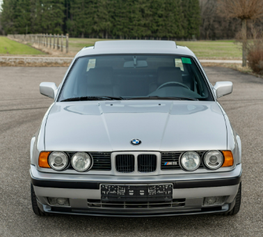
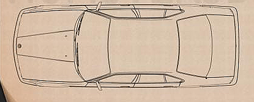
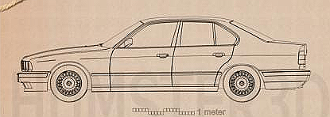
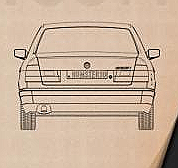

Not a museum piece — the actual car. A European-market 520i Limousine, type code HB51, built at Dingolfing with the twin-cam M50B20 straight six: 1 991 cc, four valves per cylinder, 110 kW. The gentleman's specification — enough six-cylinder smoothness to cross a continent, small enough to rev like it means it.
| Modell | 520i (E34) |
| Typschlüssel | HB51 |
| Karosserie | Limousine, 4 Türen |
| Lenkung | Links |
| Motor | M50B20 · 2.0 l · 24v |
| Leistung | 110 kW / 150 hp |
| Antrieb | Heckantrieb |
| Werk | Dingolfing |
| Außenfarbe | Sterlingsilber metallic (244) |
The E34 engine bay is a museum of BMW's best decade: it opened with the M20 and big-block M30 sixes, switched mid-life to the twin-cam M50 (gaining VANOS variable timing from late 1992), and from 1992 the M60 V8 arrived in 3.0 and 4.0 litre form. Diesels got the M21 and the excellent M51 tds.
| Model | Engine | Layout | Displacement | Output |
|---|---|---|---|---|
| 518i | M40 / M43 | I4, SOHC | 1 796 cc | 113 – 115 hp |
| 520i ← this car | M20B20 → M50B20 | I6, 12v → 24v | 1 991 cc | 129 → 150 hp |
| 525i | M20B25 → M50B25 | I6, 12v → 24v | 2 494 cc | 170 → 192 hp |
| 530i (six) | M30B30 | I6, SOHC 12v | 2 986 cc | 188 hp |
| 535i | M30B35 | I6, SOHC 12v | 3 430 cc | 211 hp |
| 530i (V8) | M60B30 | V8, DOHC 32v | 2 997 cc | 218 hp |
| 540i | M60B40 | V8, DOHC 32v | 3 982 cc | 286 hp |
| 525tds | M51D25 | I6 turbodiesel | 2 498 cc | 143 hp |
| M5 | S38B36 / B38 | I6, DOHC 24v | 3.6 / 3.8 l | 315 / 340 hp |
Manuals were split between Getrag (small sixes) and ZF (big sixes and V8s), with the M5 getting Getrag's 280 five-speed and, late in life, a six-speed. Automatics evolved from the ZF 4HP22 four-speed to the electronic 5HP18 and the 5HP30 behind the 540i — one of the first five-speed autos in the class.
All of it feeds a 188 mm or 210 mm differential. LSD was a rare factory option on the sixes, standard at 25 % lock on the M5. The full cross-model diff picture, LSD or open, is on the Diffs page.
| Unit | Type | Fitted to |
|---|---|---|
| Getrag 260 | 5-sp manual | 520i ← this car, 525i |
| ZF S5D 310 | 5-sp manual | 530i, 535i, 540i |
| Getrag 280 | 5-sp manual | M5 |
| ZF 4HP22 | 4-sp auto | sixes |
| ZF 5HP18 | 5-sp auto | M50 sixes |
| ZF 5HP30 | 5-sp auto | 540i |
| Diff 188/210 mm | Open std. · LSD rare option | 518i – 540i |
| Diff 210 mm | LSD standard, 25% | M5 |
Up front the E34 introduced the double-pivot MacPherson layout to the 5 Series — two lower links creating a virtual steering axis for better feel and stability at autobahn speed. The rear stayed with refined semi-trailing arms; Tourings could have self-levelling rear suspension.
Six-cylinder cars steer through a ZF recirculating-ball box with the marque's classic slack-free weighting; the V8 models moved to rack-and-pinion. Servotronic speed-sensitive assistance was optional — and divisive.
| Front | Double-pivot MacPherson strut |
| Rear | Semi-trailing arms, coil / self-level |
| Steering | Recirc. ball (I6) · rack & pinion (V8) |
| Brakes | Vented discs F, discs R, ABS std. |
| Drag coeff. | cd ≈ 0.30 – 0.32 |
| Fuel tank | 80 l |
The E34 moved the 5er to 5 × 120 with a 72.6 mm centre bore — the fitment BMW kept for decades after. The factory catalogue is a greatest-hits list: bottlecaps for the humble, Style 5 cross-spokes for the elegant, and the M-System "throwing stars" for the brave.
| Wheel | Size | Note |
|---|---|---|
| Bottlecaps (St. 3) | 15 × 7" | base alloy |
| Style 5 cross-spoke | 16 – 17" | the E34 look |
| Style 8 turbines | 15 × 7" | quiet class |
| M-System I/II | 17 × 8 / 9" | "throwing stars" |
| Fitment | 5 × 120 · CB 72.6 | ET ~18 – 24 |
Penned in Claus Luthe's studio with Ercole Spada's hand in the surfacing, the E34 stretched the shark-nose theme into one clean wedge: flush glass, a low cowl, wide L-shaped tail lights and a cd around 0.30. It's the last 5 Series where every panel still reads as a drawn line rather than a sculpted surface — engineering you can see from across a parking lot.
The E34's colour book ran from restrained solids to deep, cool metallics — a natural fit for the car's machined, wedge-shaped surfacing. A dozen highlights below. Swatches are close approximations only: no screen has ever done justice to a metallic flake coat.
Every E34 M5 was assembled at BMW M's Garching works from painted shells shipped in from Dingolfing. Each car received a numbered plaque on the centre console and a bespoke wood shift knob.
Total E34 M5 production across 1988 – 1995, of which only 891 were the Touring wagon — at launch, the world's fastest production estate car.
Permanent all-wheel drive via a viscous-coupling centre diff and multi-plate clutch: a genuine four-wheel-drive executive saloon a decade before it was fashionable.
The E34 introduced the Touring body style to the range, and with it optional self-levelling rear suspension and load-adaptive damping.
Electronic Damper Control let the driver soften or firm the ride from a dash switch — one of the first adjustable-damping systems fitted to a BMW.
Flush glazing, hidden gutters and a shallow front end made the E34 one of the slipperiest three-box sedans of its era.
Buyers could special-order paint and trim combinations straight from the factory, outside the standard catalogue — those cars are vanishingly rare today.
.jpeg)

.jpeg)
.jpeg)
.jpeg)